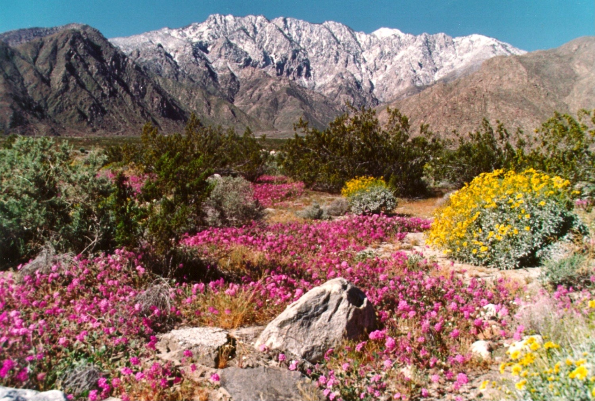

Lynn Sweet | Principal Investigator, Assistant Research Ecologist
Julia Parish | Data Science Intern
2022-07-22

Chino Canyon Wildflowers, Coachella Valley, California. Image Credit: Coachella Valley Mountains Conservancy: Bill Havert